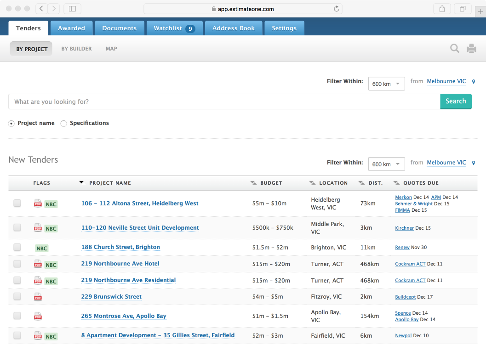
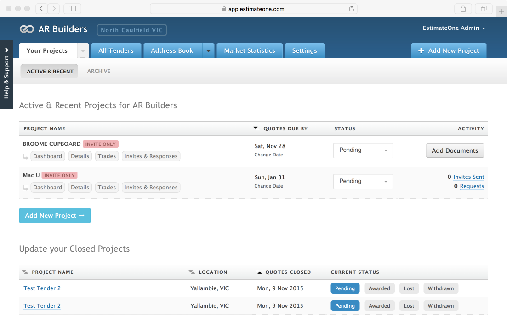
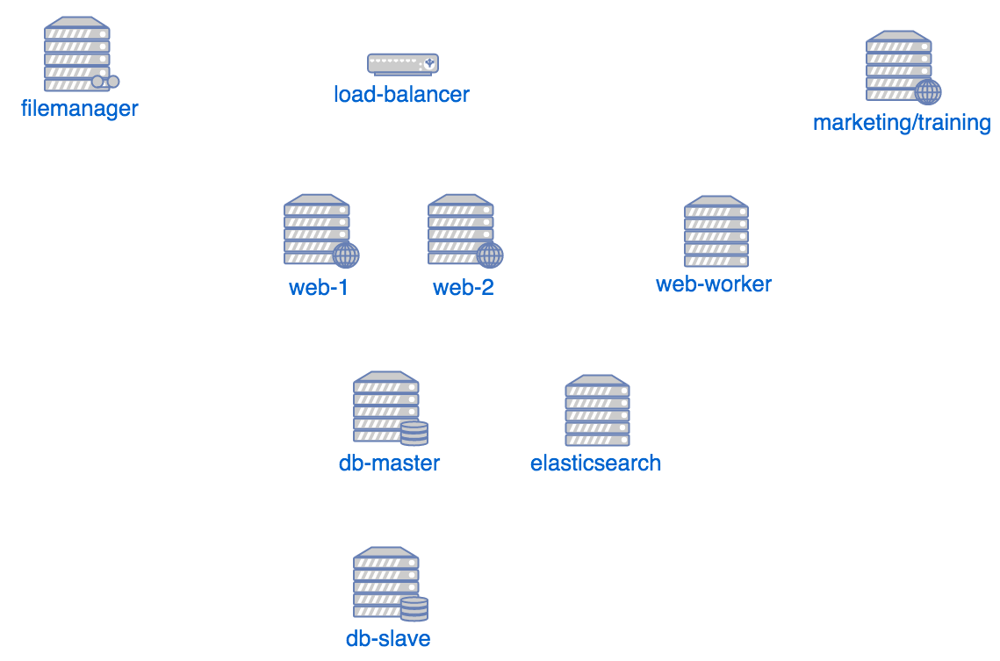
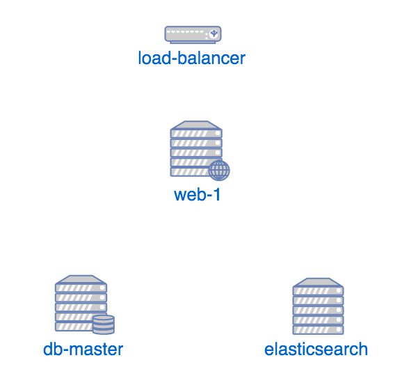
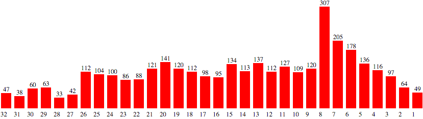

Migrating a Legacy App to Symfony
Melbourne Symfony2 Meetup - Nov 2015
Tom Corrigan /
@tommygnr
About Me
Lead Developer at
EstimateOne
Co-Founder of
RosterCloud
About EstimateOne
Started in 2008
Last year $53 billion of construction work was posted on EstimateOne.
#1 Position in Australia
Just Launched in New Zealand
Subcontractor noticeboard

Builder portal

Sounds good so far
Except
The codebase is as old as the app
Lots of bad practices
Servers are hand configured, running different OS versions
Business Challenges
Write the amazing new app while maintaining the existing product.
Migrating data from the old app to the new
Make the migration a win for customers, not just developers
Why Symfony2?
Team has PHP expertise
Symfony2 is best in class PHP framework
Take advantage of the ecosystem
The team
3 Devs + 1 part time dev ops + 1 technical CEO
Andrew - Technical CEO
Rami - Dev
James - Dev
Tom - Dev
Will - DevOps
Servers - Prod

Servers - Stage

The Plan
Keep a largely similar web interface
All the hard work should be behind the scenes
Customers like the app - developers don't
Migration script
772 commits, 6000 lines in one file!
Extract/transform/load 35GB data.
Biggest table had 90million rows
xhprof/uprofiler
What we did well
Wrote and tested a migration playbook - 10 pages, all the nitty gritty
Optimised the heck out of the slow stuff
ETL
Indexing ~30Gb data in elasticsearch
What we didn't do well
Follow the migration playbook
Get enough sleep
Delay launch until we were ready!
What worked
Capistrano
Slack
Ansible + Vagrant
PHPStorm
Ditching PHP
Ditching SQL dumps
Code Review
Continuous Integration
GitHub
What worked
Capistrano
$ bin/cap prod deploy
Notifies slack channel deployment started
Checks build status with GitHub - if it's not green deploy aborts
Updates code on all web servers, composer install etc
Runs migrations
Builds assets with gulp etc
Sends deploy success notification to slack
Reloads php-fpm for 0 downtime deploy
What worked
Slack
No more productivity killing interruptions
Searchable archive
Gifs
Integrations
Everybody can see I'm deploying
Everybody can see James broke the build
Everybody can see the uptick in sentry errors when Rami deployed the broken build
What worked
Ansible + Vagrant
$ ansible-playbook playbook.yml
Integrates extremely nicely with vagrant
Rolling out config changes is as easy as deploying code changes
prod/dev parity - not a single issue in production that slipped through due to a different dev environment
Anyone can understand and reason about our server infrastructure
Changes to production environment can be easily tested locally
What worked
PHPStorm
I used to hate IDEs - not anymore
The symfony2 plugin is amazing
Knows every service
Crazy good code completion
Cheap!
What worked
Ditching PHP
There are some things you shouldn't use PHP for
Creating 1.5Gb zip archives is one of them
Node.js to the rescue
What worked
Ditching SQL dumps
Used to backup via sql dumps (we skipped the big tables to speed it up) 45 mins
Importing sql dumps to dev even more painful 1.5 - 2 hours
Innobackupex does a file level backup
Can sync a 35GB database from prod to local dev in ~40mins
What worked
Code review
Every piece of work, no matter how small, gets reviewed
We catch multiple bugs every week
Code quality much higher
Coding standards are maintained
Productivity is higher too!
What worked
Continuous integration
We have 2 functional tests! - Have caught 4 bugs this way!
50 unit tests - no bugs yet, but greater confidence in refactoring
We need to double down here
Scope to add
coding style checks
Checks for missing migrations
Performance tests (eg too many queries on a page)
Cross browser testing
What worked
GitHub

Bitbucket sucked
26 weeks ago is when we switched to github
We didn't realise how much we hated bitbucket
What didn't work
Starting from scratch
Time estimates
Premature optimisation
Low spec iMacs
BitBucket & HipChat
What didn't
Start from scratch
The first attempt was a rewrite and reimagining of everything
As is typically the case when you try such things - it failed
What didn't
Time Estimates
Not a good look for a company called EstimateOne!
Initial prediction, launched late december 2014.
Missed every date we set up to late July - so we stopped setting them
Finally launched September 26
What didn't
Scope creep and premature optimisation
Don't build it til you need it
We still have entities that we haven't used.
Features were added then ripped out (morale killer)
What didn't
Low spec hardware
Our iMacs had mechanical hard disks and 8Gb ram
Running multiple vagrant machines + PHPStorm was excruciating
Don't skimp on something you're using 35-40 hours a week
What didn't
Atlassian products
HipChat: ew
Bitbucket: Recall productivity gains
I won't be buying Atlassian shares
What's next
Statsd
Elasticsearch/logstash/kibana
New products
Questions